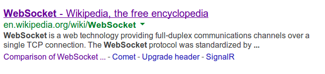
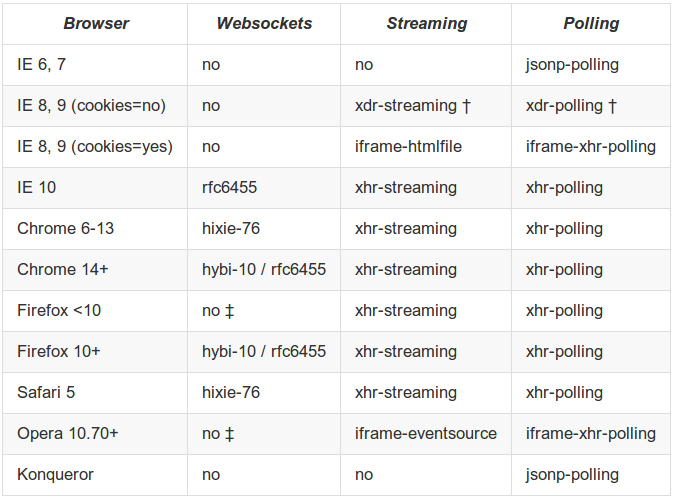
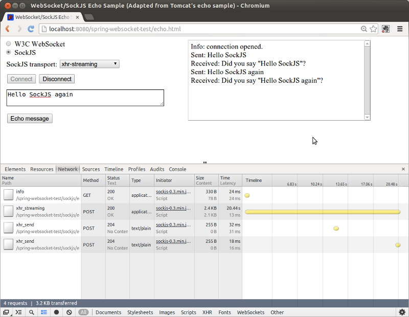

Intro To WebSocket Applications with Spring Framework 4.0
Rossen Stoyanchev
Senior Staff Engineer, Pivotal
So, what are we here
to talk about?
WebSocket
"mechanism for browser-based applications ...
two-way communication with servers ...
does not rely on multiple HTTP connections"
- RFC 6455, The WebSocket Protocol
Sounds promising
there is a lot more than is
apparent to the eye
It is a popular term by now
and has led to expectations
ahead of experience
Expectations
- It's standard, it should work
- It replaces Ajax/Comet maybe even REST
- I know web apps, this can't be too different
- I will program to WebSockets
Good To Know
- You need IE 10
- There are issues with proxies
- Event-driven, messaging architecture
- Raw WebSocket very low level
- IT'S A BIG SUBJECT!
WebSockets
"Toto, I've a feeling we're not in REST land any more"

Last year's talk
On YouTube
- Broad, pragmatic introduction
- A survey of the land
- Some key (open-ended) questions defined
Key Takeaways from Last Year
- The need for fallback options will persist
- Integrating into a real app not yet trivial
- "Pure" WebSocket applications in the wild unlikely
- Questions remain around usage patterns
A Quick Definition
of WebSocket

WebSocket Defined
- A layer on TCP
- Full-duplex, stateful connection
- Stream of messages (rather than bytes)
- HTTP used for the initial handshake
HANDSHAKE REQUEST
GET /mychat HTTP/1.1
Host: server.example.com
Upgrade: websocket
Connection: Upgrade
Sec-WebSocket-Key: x3JJHMbDL1EzLkh9GBhXDw==
Sec-WebSocket-Protocol: chat
Sec-WebSocket-Version: 13
Origin: http://example.com
HANDSHAKE RESPONSE
HTTP/1.1 101 Switching Protocols
Upgrade: websocket
Connection: Upgrade
Sec-WebSocket-Accept: HSmrc0sMlYUkAGmm5OPpG2HaGWk=
Sec-WebSocket-Protocol: chat
then start exchanging messages...
Lifecycle Events
open- session establishedmessage- new messages receivederror- transport errorclose- session closed- Symmetrical on the client and server sides
WebSocket Frame
0 1 2 3
0 1 2 3 4 5 6 7 8 9 0 1 2 3 4 5 6 7 8 9 0 1 2 3 4 5 6 7 8 9 0 1
+-+-+-+-+-------+-+-------------+-------------------------------+
|F|R|R|R| opcode|M| Payload len | Extended payload length |
|I|S|S|S| (4) |A| (7) | (16/64) |
|N|V|V|V| |S| | (if payload len==126/127) |
| |1|2|3| |K| | |
+-+-+-+-+-------+-+-------------+ - - - - - - - - - - - - - - - +
| Extended payload length continued, if payload len == 127 |
+ - - - - - - - - - - - - - - - +-------------------------------+
| |Masking-key, if MASK set to 1 |
+-------------------------------+-------------------------------+
| Masking-key (continued) | Payload Data |
+-------------------------------- - - - - - - - - - - - - - - - +
: Payload Data continued ... :
+ - - - - - - - - - - - - - - - - - - - - - - - - - - - - - - - +
| Payload Data continued ... |
+---------------------------------------------------------------+
What kind of payload?
- Text and binary messages
- Control frames -- close, ping, pong
- Continuation frame (fragmented message)
Message vs Frame
- A message can be broken into fragments
- Protocol implementation deals with fragments
- Applications mainly work with messages
- Good to know if tracing TCP traffic
Runtime Support
Java API for WebSocket
- Several containers pre-date JSR-356
- Jetty 7/8, Tomcat 7, GlassFish 3.x
- Much debate on the JSR-356 EG
- And all-new WebSocket implementations
Relationshipt to Servlet Spec
- JSR-356 has no dependency on Servlets
- Still, built for and by Servlet containers
- Servlet 3.1 provides the upgrade hook WebSocket engines need
HttpServletRequest.upgrade(Class<?>)
Container Versions
- Tomcat 8 + backport to Tomcat 7
- Jetty 9 native API,
JSR-356on top in Jetty 9.1 - Glassfish 4
- All complete re-writes based on JSR-356
JSR-356 API Details
- Two main options
- Extend abstract class
Endpoint, or - Use annotations
@ServerEndpoint,@ClientEndpoint
JSR-356 Server-Side Deployment
- Two main options
- Servlet container scans for annotated endpoints
- Programmatically deploy endpoints at startup via
WebSocketContainer
Spring Container Support for JSR-356
- Initialize endpoints through Spring container
ServerEndpointExporterforServerEndpointRegistrationbeansSpringConfigurator.classfor use with@ServerEndpoint- See Javadoc on respective classes
JSR-356 Limitations
- No fallback options means no IE
- No sub-protocol support means hard to build real apps
- Can't consolidate HTTP and WebSocket request handling
- Built more for applications than as server foundation
Why Sub-Protocol Support Matters
- Apps should aim to keep one socket per client
- One "main" pipeline for various messages
- Leads to 1 @ServerEndpoint per application
- Ideally class boundaries should be around functionality
"Using annotations and things is clearly in the vein of Spring and Hibernate and other popular Java libraries. When trying to build on top of it, though, I find myself wishing for an API more like Jetty 8, where I can just implement some interfaces and build my own abstractions on top of WebSocket."
Comment on jetty-users list
Spring WebSocket API
Spring WebSocket API
- Abstraction for WebSocket runtimes
- Including JSR-356 containers
- But not only - e.g. Jetty 9 API, Netty, etc
- SockJS fallback options
- New
spring-websocketdependency
Example
public class EchoHandler extends TextWebSocketHandlerAdapter {
@Override
public void handleTextMessage(WebSocketSession sess, TextMessage msg) {
sess.sendMessage(msg);
}
}Java config
@Configuration
@EnableWebSocket
public class WebSocketConfig implements WebSocketConfigurer {
@Override
public void registerWebSocketHandlers(WebSocketHandlerRegistry reg) {
reg.addHandler(new EchoHandler(), "/echo");
}
}HandshakeInterceptor
- Before/after handshake
- Access to HTTP request & response
- Ability to preclude handshake
- Can pass "handshake" attributes to
WebSocketSession - See
HttpSessionHandshakeInterceptor
WebSocketHandlerDecorator
- Transparent decoration
ExceptionWebSocketHandlerDecoratorLoggingWebSocketHandlerDecorator- Automatically applied
PerConnectionWebSocketHandler
@Configuration
@EnableWebSocket
public class WebSocketConfig implements WebSocketConfigurer {
// ...
@Bean
public WebSocketHandler snakeHandler() {
return new PerConnectionWebSocketHandler(SnakeWebSocketHandler.class);
}
}Note on URL Mapping
- Spring doesn't use JSR-356 deployment
- Free to map
WebSocketHandlervia Spring MVC or other - Requires container-specific
RequestUpgradeStrategy - Currently supported: Tomcat, Jetty, Glassfish
- See WEBSOCKET_SPEC-211 (vote please)
The Client-Side
- Programmatic handshake via
WebSocketClient - Also declarative style that can auto-start
- Via
ConnectionManagerSupportand sub-classeses
Example
@Configuration
static class ClientConfig {
@Bean
public WebSocketConnectionManager connectionManager() {
String url = "ws://example.com:8080/echo";
WebSocketHandler handler = new EchoWebSocketHandler();
WebSocketClient client = new StandardWebSocketClient();
WebSocketConnectionManager manager =
new WebSocketConnectionManager(client, handler, url);
manager.setAutoStartup(true);
return manager;
}
}SockJS Support
Philosophy
- Emulate WebSocket API as close as possible
- At least one streaming protocol per major browser
- Cross-domain and cookie support
- Polling in old browsers, hosts behind restrictive proxies
- No Flash inside
SockJS Transports by Browser

Enable SockJS in Spring
@Configuration
@EnableWebSocket
public class WebSocketConfig implements WebSocketConfigurer {
@Override
public void registerWebSocketHandlers(WebSocketHandlerRegistry reg) {
reg.addHandler(new EchoHandler(), "/echo").withSockJS();
}
}WebSocketHandler
(same as before)
public class EchoHandler extends TextWebSocketHandlerAdapter {
@Override
public void handleTextMessage(WebSocketSession sess, TextMessage msg) {
sess.sendMessage(msg);
}
}SockJS client
var ws = new SockJS("ws://localhost:8080/echo");
ws.onopen = function (event) { };
ws.onmessage = function (event) { };
ws.onclose = function (event) { };
The SockJS Protocol
- Defines URL scheme
- Provided in the form of a readable test suite
- Wide support across languages
SockJS URL Scheme
GET /echo
GET /echo/info
POST /echo/<server>/<session>/<transport>
SockJS Requests
GET /echo/info
POST /echo/375/5rzpg08l/xhr_streaming # server-to-client
POST /echo/375/5rzpg08l/xhr_send # client-to-server
POST /echo/375/5rzpg08l/xhr_send # client-to-server
Where Does It Work?
- Any Servlet 3.0 container
- Even if server doesn't have WebSocket yet!
- No hard dependency on Servlet API though
- Experimental Netty support
Client Disconnects
- Servlet 3 containers don't detect clients going away
SockJsServicehowever sends periodic heartbeats- A failure to send a message closes the session
- See related discussion
Next?
- WebSocket and SockJS are important foundations
- We haven't discussed sub-protocols
- Usage patterns
- Stay here for the next session
- "Building WebSocket Browser Applications with Spring"